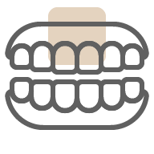

Fatete Dentare
Sunt un strat de material așezat peste dinte
pentru a masca culori și forme nedorite ale
dinților, îmbunătățind apectul dentar și
estetica zâmbetului tău, făcând posibil acel
zâmbet perfect, acestea sunt de 2 tipuri:
fațete PREP si NO-PREP.

Implantologie
Implantul dentar este o radacină de dinte
artificială, un șurub din titan, plasat
chirurgical la osul maxilarului în locul unui
dinte lipsă ori alterat, pot fi utilizate pentru
a înlocui un dinte sau mai mulți dinți
integrându-se perfect în structura osoasă.

Ortodonție
Este o ramură a stomatologiei
specializată în prevenirea și corectarea
dinților inestetici, poziționați
necorespunzător, ajutând la
îmbunătățirea esteticii dentare, la
protejarea dinților, gingiilor și a
articulației maxilare.

Odontoterapie
Se ocupă cu diagnosticul, prevenția și
tratamentul leziunilor carioase, caria dentară
este o leziune care distruge structura
dințiilor, în stadiile incipiente acestea pot fi
observate și prevenite în urma unui control
periodic la dentist.
Cosmetică Dentară
Se referă la tratamentele dentare care
îmbunătățesc aspectul dinților, gingiilor și
zâmbetului, fațetele și albirea dentară sunt
considerate proceduri cosmetice, clinica
noastră oferă o gamă completă de
tratamente stomatologice cosmetice.

Estetică Facială
Tratamentele estetice minim invazive
pot elimina liniile fine de expresie și
ridurile formate în timp. Acestea
îmbunătățesc textura pielii și te pot face
să arăți mai tânăr(ă) cu 10 ani, imediat ce
ai ieșit pe ușa cabinetului nostru.